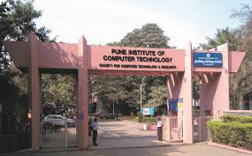
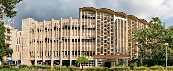

Pune Institute of Computer Technology aspires to be the leader in Higher technical
education and research of International repute.
To be the leading and the most sought after institute of education and research
in emerging engineering and technology disciplines that attract, retains and
sustains gifted individuals of significant potential.
accusantium. Sunt quo quibusdam cupiditate tempora neque impedit quasi
accusantium. Sunt quo quibusdam cupiditate tempora neque impedit quasi
accusantium. Sunt quo quibusdam cupiditate tempora neque impedit quasi
| Rollno | Student name | City |
|---|---|---|
| 01 | Sumit | Pune |
| 02 | Prathamesh | Mumbai |
| 03 | Aniket | Yavatmal |
| 04 | Sai | Banglore |
| 05 | Ritesh | Goa |
The Training and Placement (T&P) Cell plays an integral role in journey of the students, aspiring for excellent job opportunities. The T&P Cell at PICT serves as an aerodrome for the flights of the young undergrads and post grads to be taken-off to greater horizons and heights beyond imagination. T&P Cell, headed by Dr. S. S. Narkhede is recognized for the exemplary placements offered to its of CE, E&TC Engg. and IT Students and thus stands sturdy to the expectations of its Stakeholders. Regardless of the department, every batch raises the bar for the upcoming batches and remarkably takes the baton ahead. All the students meeting the criteria prescribed by the Institute and the companies are permitted to register for the Placement Process. The registration for the placement commences at the end of the sixth semester of engineering. The Institute is delighted to host the numerous companies belonging to “DREAM JOBS” category. Our creamy students earn spots in the top brackets of such companies offering the pay package above 20 LPA.
The Indian Institute of Technology Bombay (IIT Bombay) today held Commencement 2024 at the Institute’s Convocation Hall. Mr. Natarajan Chandrasekaran, the Chairman of Tata Sons, the holding company and promoter of all Tata Group companies, was the Chief Guest and delivered the Commencement Address. Commencement is a special event to be conducted once every year to gather all students expected to graduate in that academic year. The Chief Guest Mr. Natarajan Chandrasekaran in his address spoke about three fundamental aspects – Trust, Character and Purpose that determine success in the journey of building a career. He said, "Building and cultivating trust is very essential to your success. When an organisation and its colleagues trust you, they not only empower you but also embrace you. Secondly, Character is your capacity to prioritize your values over your instincts. It will enable you to be true to your principles. While trust and character will help you to be successful in your career, the purpose that you live for will inspire and guide you and give you fulfillment,” he added.

Special Characters :
&, <, >, ", '